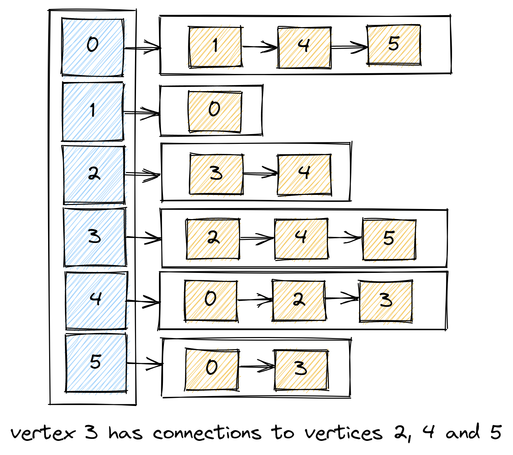

Depth First Search. Algorithms Series
Graph algorithms solve many problems in computer science and are fundamental to the field. Depth First Search (DFS) is one of them.
Representation of a graph
Before we dive into DFS we need to understand Graph structure and terminology.
Graph is a set of vertices and a collection of edges that each connect a pair of vertices.
Examples of a Graph would be:
- in finance : Currency is a vertex, transaction is an edge
- in transportation : Street intersection is a vertex, route is an edge
Vertex 1 is connected to Vertex 2 when there is an edge between them.
So, in implementation we will use a vertex-indexed array of lists of vertices connected to each vertex.

Test is checking that graph is created, and vertex with index 3 has 3 connections.
@Test
void shouldCreateGraph() {
Graph graph = new Graph(6);
graph.addEdge(0,1);
graph.addEdge(0,4);
graph.addEdge(0,5);
graph.addEdge(2,3);
graph.addEdge(2,4);
graph.addEdge(3,4);
graph.addEdge(3,5);
assertEquals(3, graph.getConnectionsFor(3).size());
assertEquals(2, graph.getConnectionsFor(3).get(0));
assertEquals(4, graph.getConnectionsFor(3).get(1));
assertEquals(5, graph.getConnectionsFor(3).get(2));
}
public class Graph {
private int numberOfVertices;
private int numberOfEdges;
private final LinkedList<Integer>[] connections;
public Graph(int numberOfVertices) {
this.numberOfVertices = numberOfVertices;
connections = (LinkedList<Integer>[]) new LinkedList[numberOfVertices];
for (int vertex = 0; vertex < numberOfVertices; vertex++) {
connections[vertex] = new LinkedList<>();
}
}
public void addEdge(int vertex1, int vertex2) {
numberOfEdges++;
connections[vertex1].add(vertex2);
connections[vertex2].add(vertex1);
}
public List<Integer> getConnectionsFor(int vertex) {
return connections[vertex];
}
public int getNumberOfVertices() {
return numberOfVertices;
}
public int getNumberOfEdges() {
return numberOfEdges;
}
}
Now with graph in place we can proceed with DFS implementation.
Test is checking that all vertices are visited by DFS.
@Test
void allVerticesShouldBeVisited() {
Graph graph = createGraph();
DepthFirstSearch dfs = new DepthFirstSearch(graph, 0);
assertTrue(dfs.isVisited(1));
assertTrue(dfs.isVisited(2));
assertTrue(dfs.isVisited(3));
assertTrue(dfs.isVisited(4));
assertTrue(dfs.isVisited(5));
}
Implementation is pretty simple, we pass graph and source from where we want to start. Mark the source vertex as visible, get connections for that vertex and do the same recursively for every vertex.
public class DepthFirstSearch {
private final boolean[] visited;
public DepthFirstSearch(Graph graph, int sourceVertex) {
this.visited = new boolean[graph.getNumberOfVertices()];
dfs(graph, sourceVertex);
}
private void dfs(Graph graph, int vertex) {
visited[vertex] = true;
for (int connectedVertex : graph.getConnectionsFor(vertex)) {
if (!visited[connectedVertex]) {
dfs(graph, connectedVertex);
}
}
}
public boolean isVisited(int vertex) {
return visited[vertex];
}
}
Complete implementation with test cases can be found on GitHub.
Sources: